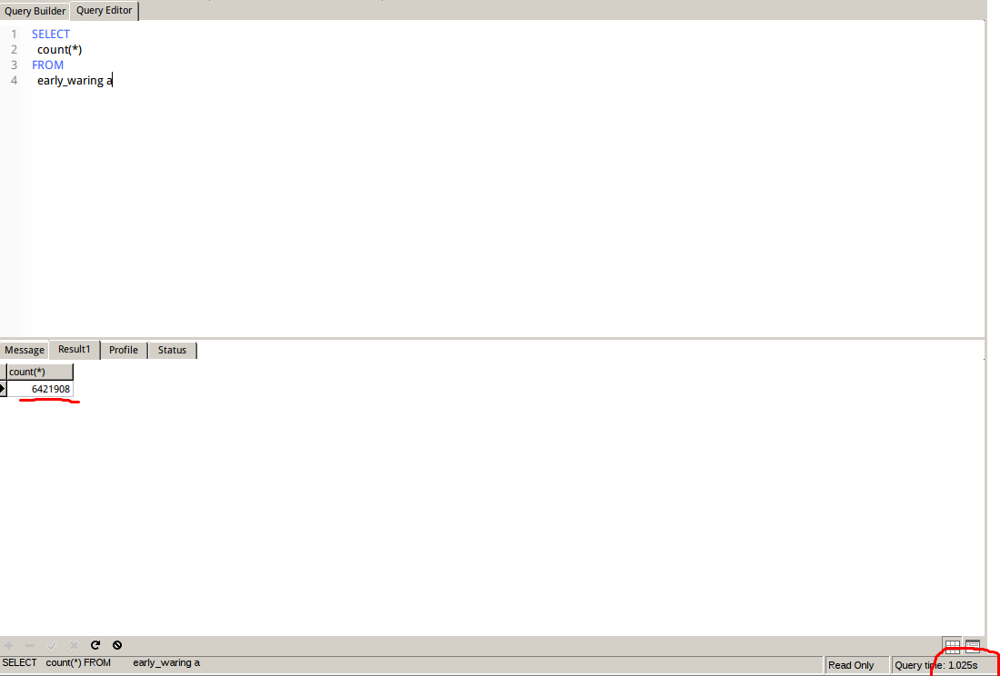
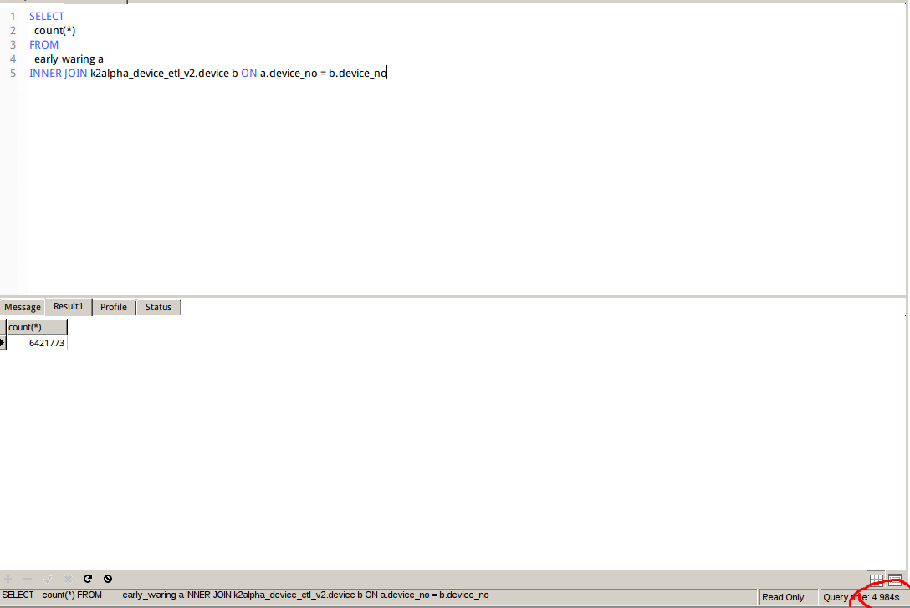
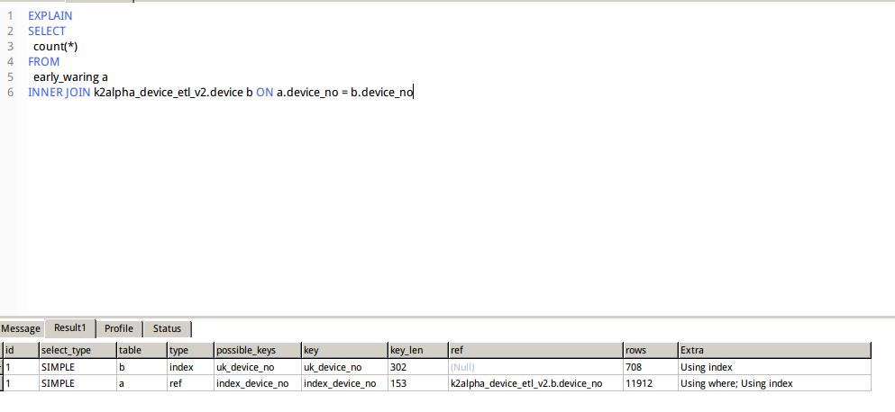
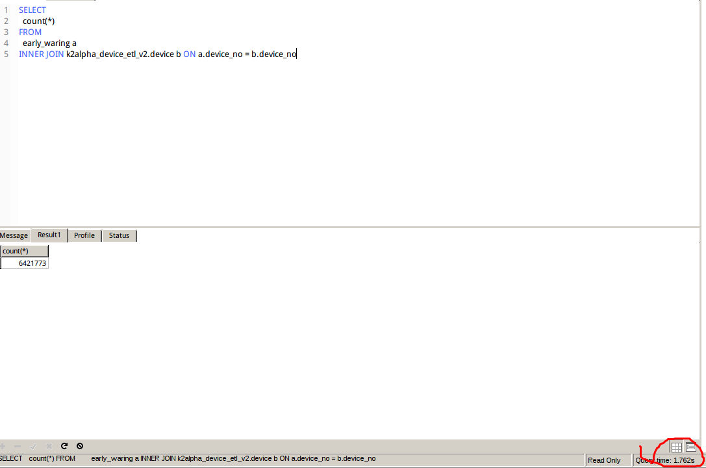
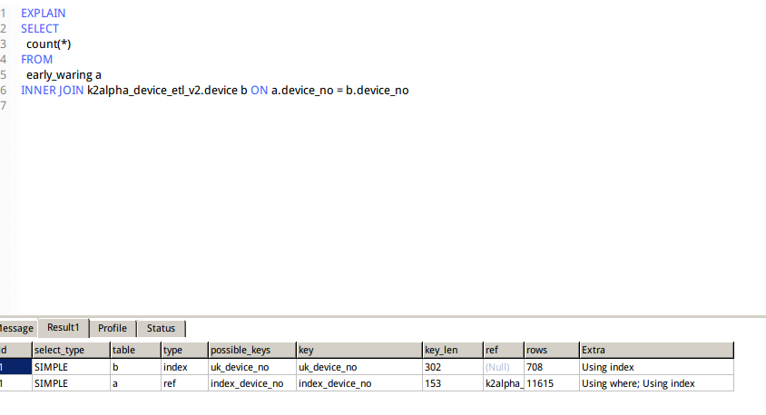
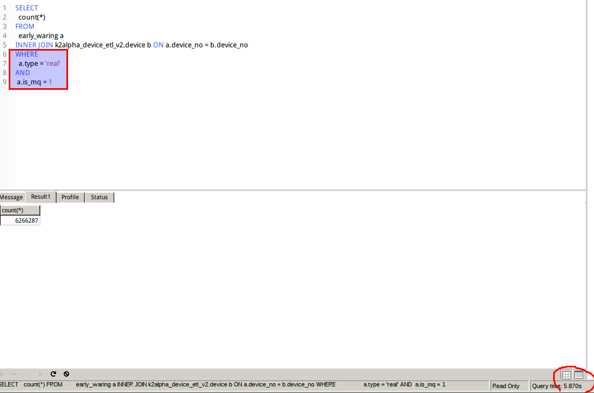
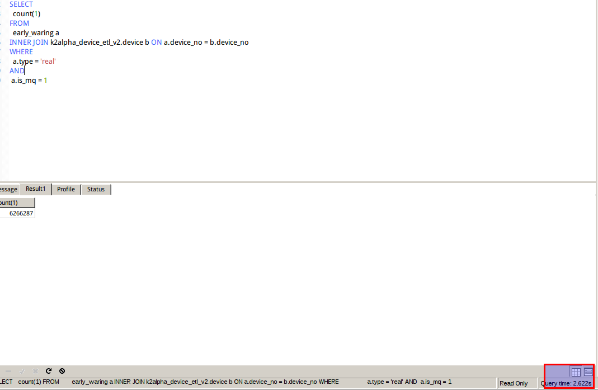
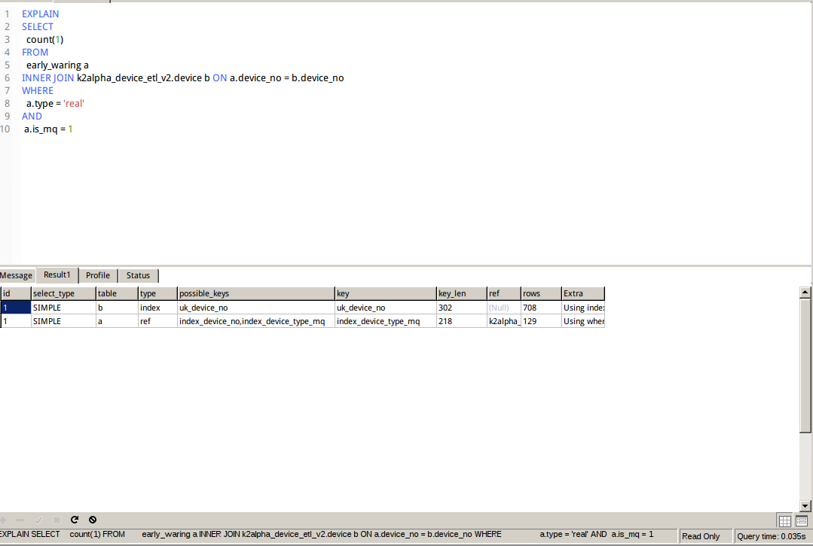

mysql 表数据达到百万甚至千万时，如何优化？
最近在忙其他项目，偶然发现之前的项目中，有个定时刷新告警信息的模块查询比较慢，简单的一个关联查询，尽然耗了20多秒才能出来，
才发现表的数据量已经达到了700万，我擦，我这暴脾气，不知道我强迫症吗，于是下定决心1个小时解决了丫的
（–_– 后来，用时之久啊，人都消瘦了许多）
首先思路是，这么大数据，查询当然必须添加索引了，看以下介绍：
1.对查询进行优化，应尽量避免全表扫描，首先应考虑在 where 及 order by 涉及的列上建立索引。
2.应尽量避免在 where 子句中对字段进行 null 值判断，否则将导致引擎放弃使用索引而进行全表扫描，
如：select id from t where num is null可以在num上设置默认值0，确保表中num列没有null值，
然后这样查询：select id from t where num=0
3.应尽量避免在 where 子句中使用!=或<>操作符，否则引擎将放弃使用索引而进行全表扫描。
4.应尽量避免在 where 子句中使用or 来连接条件，否则将导致引擎放弃使用索引而进行全表扫描，
如：select id from t where num=10 or num=20可以这样查询：select id from t where num=10 union all select id from t where num=20
5.in 和 not in 也要慎用，否则会导致全表扫描，
如：select id from t where num in(1,2,3) 对于连续的数值，
能用 between 就不要用 in 了：select id from t where num between 1 and 3
6.下面的查询也将导致全表扫描：select id from t where name like ‘%李%’若要提高效率，可以考虑全文检索
7.如果在 where 子句中使用参数，也会导致全表扫描。
因为SQL只有在运行时才会解析局部变量，但优化程序不能将访问计划的选择推迟到运行时；它必须在编译时进行选择。
然 而，如果在编译时建立访问计划，变量的值还是未知的，因而无法作为索引选择的输入项。
如下面语句将进行全表扫描：select id from t where num=@num可以改为强制查询使用索引：select id from t with(index(索引名)) where num=@num
8.应尽量避免在 where 子句中对字段进行表达式操作，这将导致引擎放弃使用索引而进行全表扫描。
如：select id from t where num/2=100应改为:select id from t where num=100*2
9.应尽量避免在where子句中对字段进行函数操作，这将导致引擎放弃使用索引而进行全表扫描。
如：select id from t where substring(name,1,3)=’abc’ ，
name以abc开头的id应改为: select id from t where name like ‘abc%’
10.不要在 where 子句中的“=”左边进行函数、算术运算或其他表达式运算，否则系统将可能无法正确使用索引。
11.在使用索引字段作为条件时，如果该索引是复合索引，那么必须使用到该索引中的第一个字段作为条件时才能保证系统使用该索引，
否则该索引将不会被使用，并且应尽可能的让字段顺序与索引顺序相一致。
12.不要写一些没有意义的查询，如需要生成一个空表结构：select col1,col2 into #t from t where 1=0
这类代码不会返回任何结果集，但是会消耗系统资源的，应改成这样：
create table #t(…)
13.很多时候用 exists 代替 in 是一个好的选择：select num from a where num in(select num from b)
用下面的语句替换：
select num from a where exists(select 1 from b where num=a.num)
14.并不是所有索引对查询都有效，SQL是根据表中数据来进行查询优化的，当索引列有大量数据重复时，SQL查询可能不会去利用索引，
如一表中有字段sex，male、female几乎各一半，那么即使在sex上建了索引也对查询效率起不了作用
15.索引并不是越多越好，索引固然可 以提高相应的 select 的效率，但同时也降低了 insert 及 update 的效率，因为 insert 或 update 时有可能会重建索引，
所以怎样建索引需要慎重考虑，视具体情况而定。一个表的索引数最好不要超过6个，若太多则应考虑一些不常使用到的列上建的索引是否有 必要。
16.应尽可能的避免更新 clustered 索引数据列，因为 clustered 索引数据列的顺序就是表记录的物理存储顺序，一旦该列值改变将导致整个表记录的顺序的调整，会耗费相当大的资源。
若应用系统需要频繁更新 clustered 索引数据列，那么需要考虑是否应将该索引建为 clustered 索引。
17.尽量使用数字型字段，若只含数值信息的字段尽量不要设计为字符型，这会降低查询和连接的性能，并会增加存储开销。
这是因为引擎在处理查询和连接时会逐个比较字符串中每一个字符，而对于数字型而言只需要比较一次就够了。
18.尽可能的使用 varchar/nvarchar 代替 char/nchar ，因为首先变长字段存储空间小，可以节省存储空间，其次对于查询来说，在一个相对较小的字段内搜索效率显然要高些。
19.任何地方都不要使用 select from t ，用具体的字段列表代替“”，不要返回用不到的任何字段。
20.尽量使用表变量来代替临时表。如果表变量包含大量数据，请注意索引非常有限（只有主键索引）。
21.避免频繁创建和删除临时表，以减少系统表资源的消耗。
22.临时表并不是不可使用，适当地使用它们可以使某些例程更有效，例如，当需要重复引用大型表或常用表中的某个数据集时。但是，对于一次性事件，最好使用导出表。
23.在新建临时表时，如果一次性插入数据量很大，那么可以使用 select into 代替 create table，避免造成大量 log ，以提高速度；
如果数据量不大，为了缓和系统表的资源，应先create table，然后insert。
24.如果使用到了临时表，在存储过程的最后务必将所有的临时表显式删除，先 truncate table ，然后 drop table ，这样可以避免系统表的较长时间锁定。
25.尽量避免使用游标，因为游标的效率较差，如果游标操作的数据超过1万行，那么就应该考虑改写。
26.使用基于游标的方法或临时表方法之前，应先寻找基于集的解决方案来解决问题，基于集的方法通常更有效。
27.与临时表一样，游标并不是不可使 用。对小型数据集使用 FAST_FORWARD 游标通常要优于其他逐行处理方法，尤其是在必须引用几个表才能获得所需的数据时。
在结果集中包括“合计”的例程通常要比使用游标执行的速度快。如果开发时 间允许，基于游标的方法和基于集的方法都可以尝试一下，看哪一种方法的效果更好。
28.在所有的存储过程和触发器的开始处设置 SET NOCOUNT ON ，在结束时设置 SET NOCOUNT OFF 。无需在执行存储过程和触发器的每个语句后向客户端发送DONE_IN_PROC 消息。
29.尽量避免大事务操作，提高系统并发能力。
30.尽量避免向客户端返回大数据量，若数据量过大，应该考虑相应需求是否合理。
多用 explain去观察， 优化你的sql
EXPLAIN SELECT * FROM test.test WHERE title = 'ggg'
索引操作
索引的创建可以在CREATE TABLE语句中进行，也可以单独用CREATE INDEX或ALTER TABLE来给表增加索引。删除索引可以利用ALTER TABLE或DROP INDEX语句来实现
（1）使用ALTER TABLE语句创建索引。
语法如下：
alter table table_name add index index_name (column_list) ;
alter table table_name add unique (column_list) ;
alter table table_name add primary key (column_list) ;
其中包括普通索引、UNIQUE索引和PRIMARY KEY索引3种创建索引的格式，table_name是要增加索引的表名，column_list指出对哪些列进行索引，多列时各列之间用逗号分隔。索引名index_name可选，缺省时，MySQL将根据第一个索引列赋一个名称。另外，ALTER TABLE允许在单个语句中更改多个表，因此可以同时创建多个索引。
创建索引的示例如下：
mysql> alter table table_test add index index_test1(name) ;
Query OK, 2 rows affected (0.08 sec)
（2）使用CREATE INDEX语句对表增加索引。
能够增加普通索引和UNIQUE索引两种。其格式如下：
create index index_name on table_name (column_list) ;
create unique index index_name on table_name (column_list) ;
创建索引的示例如下：
mysql>create index index_test2 on table_test(age);
Query OK, 2 rows affected (0.08 sec)
说明：table_name、index_name和column_list具有与ALTER TABLE语句中相同的含义，索引名不可选。另外，不能用CREATE INDEX语句创建PRIMARY KEY索引。
（3）删除索引。
删除索引可以使用ALTER TABLE或DROP INDEX语句来实现。DROP INDEX可以在ALTER TABLE内部作为一条语句处理，其格式如下：
drop index index_name on table_name ;
alter table table_name drop index index_name ;
alter table table_name drop primary key ;
其中，在前面的两条语句中，都删除了table_name中的索引index_name。而在最后一条语句中，只在删除PRIMARY KEY索引中使用，因为一个表只可能有一个PRIMARY KEY索引，因此不需要指定索引名。如果没有创建PRIMARY KEY索引，但表具有一个或多个UNIQUE索引，则MySQL将删除第一个UNIQUE索引。
如果从表中删除某列，则索引会受影响。对于多列组合的索引，如果删除其中的某列，则该列也会从索引中删除。如果删除组成索引的所有列，则整个索引将被删除。
删除索引的操作，如下面的代码：
mysql> drop index name on table_test ;
Query OK, 2 rows affected (0.08 sec)
索引的使用
可能用到索引的地方
where 子句，order by，group by
不需要创建索引的情况
- 表比较小
- 赋值有限的列（枚举），不要创建索引。创建的索引返回的行越少越好，此时区分度大。
- 用不上索引的列，不要创建索引。
- 长字符串的列，不要全部创建索引，但可以使用短索引（名字的头8个字符）
索引有效的情况
<，<=，=，>，>=，between，in，like ‘admin%’，独立索引+or+独立索引+mysiam
索引失效的情况
- or+innodb
- like查询是以%开头，不使用索引。like ‘%admin’
- 字符类型在where子句中不加引号，不使用索引
- not in 或<> 或!=
6.对字段加函数或者运算的 - 在order by操作中，mysql只有在排序条件不是查询条件表达式时才使用索引。尽管如此，在涉及多个数据表的查
询里，即使有索引可用，那些索引在加快ORDER BY操作方面也没什么作用。 - 在JOIN操作中，只有在主键和外键的数据类型相同时才能使用索引，否则即使建立了索引也不会使用。
- is not null 或 is null 索引会失效
- 如果mysql估计使用全表扫描要比使用索引快,则不使用索引。
比如：列id均匀的分布在1-100之间。下面的sql则不会使用索引
select * from table_name where id > 1 and id<90;
查看索引的使用情况
show status like ‘handler_read%’;
大家可以注意：
handler_read_key:这个值越高越好，越高表示使用索引查询到的次数
handler_read_rnd_next:这个值越高，说明查询低效
案例分析
一张告警信息表，数据量为620万
查询数量,用时1s

添加内连接，用时5s (device表700条数据)

查看使用索引情况，发现主表没有使用索引

给device_no字段添加索引
添加索引后查询，用时不到2s

查看索引使用情况,索引被使用

添加where条件后，查询变成了5s多

由于type,和is_mq字段类型很少，也就几个，重复率较大，所有添加索引效果不大
亲测了添加type索引,is_mq所有，或者 type,is_mq联合索引，均无变快
目前最快效率就是5s，不知道还能不能更快了
后续。。。
经过了一晚上，今天偶然打开了一篇文章
https://blog.csdn.net/kk185800961/article/details/44042629
给了我点思路，创建个device_no,type,is_mq联合索引呢？
经过测试，速率快到了2.6s，又提速1倍
添加联合索引
查询结果

使用索引情况

注意，所有不是越多越好，合理使用索引，才能起到作用
最后优化到了2s，心里还是乐开了花一样，哈哈